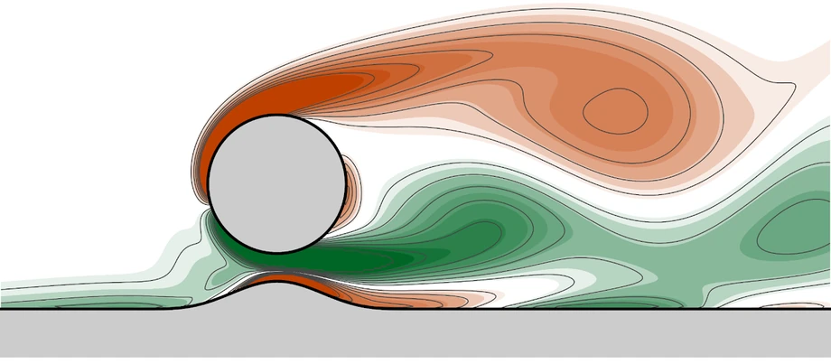
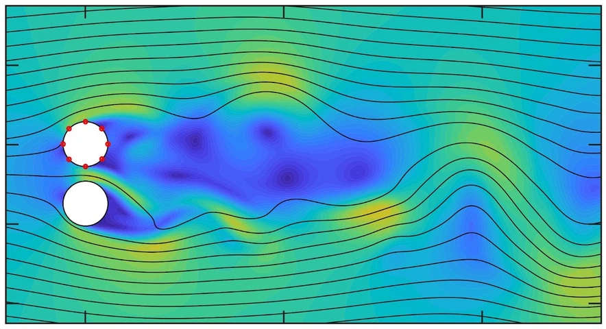

Research

Wake dynamics
I study how vortices form and evolve behind bodies in a flow, and how nearby objects and moving boundaries change the wake and the forces it produces.

Vortex-induced vibration
I study how vortex shedding drives a structure to oscillate, how that motion changes the wake, and how the exchange of energy affects the vibration.

Flow sensing
What can a structure sense about its surroundings? I investigate how pressure measurements at a few points on its surface can reveal changes in the flow or the presence of a nearby body.